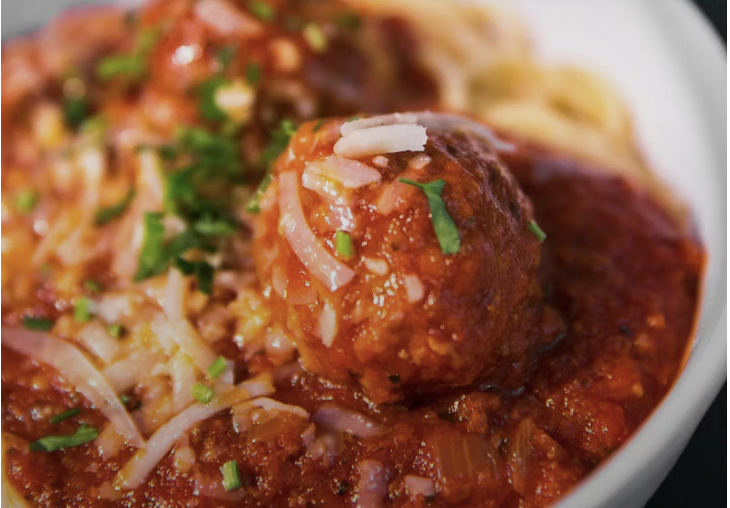

Recipe List
Meatballs

Description
Meatballs are delicious! Whether you want something to compliment your pasta, or a hearty sub, this recipe will do the trick.
You can substitute any of the ground meats for a different type.
1 lb ground beef
1/2 lb ground veal
1/2 lb ground pork
2 cloves garlic, minced
2 eggs
1 cup freshly grated Romano cheese
1 1/2 cup Italian flat leaf parsley or spinach
2 cups Italian bread crumbs
1 1/2 cup luke warm water
salt & pepper to taste
3+ jars of spaghetti sauce
Steps
Heat spaghetti sauce in large pot, should come to a boil while mixing ingredients
Combine meat, garlic, eggs, cheese, parsley, salt & pepper in large bowl
Blend breadcrumbs into mixture
Slowly add water 1/2 cup at a time. Mix should be moist, but hold shape
Shape into meatballs
Drop into sauce & cook until cooked through